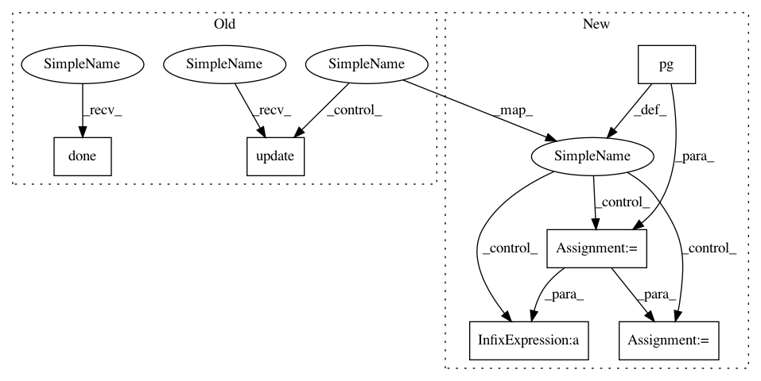

6aad1de658a933d3fa376f7fe9abf419da8a8bd2,python/baseline/tf/classify/train.py,ClassifyTrainerTf,_test,#ClassifyTrainerTf#Any#,51
Before Change
guess, lossv = self.sess.run([self.model.best, self.test_loss], feed_dict=feed_dict)
total_loss += lossv
cm.add_batch(y, guess)
pg.update()
pg.done()
metrics = cm.get_all_metrics()
metrics["avg_loss"] = total_loss/float(steps)
verbose_output(verbose, cm)
After Change
verbose = kwargs.get("verbose", None)
pg = create_progress_bar(steps)
for batch_dict in pg(loader):
y = batch_dict["y"]
feed_dict = self.model.make_input(batch_dict)
guess, lossv = self.sess.run([self.model.best, self.test_loss], feed_dict=feed_dict)
batchsz = self._get_batchsz(batch_dict)
total_loss += lossv * batchsz
total_norm += batchsz
cm.add_batch(y, guess)
metrics = cm.get_all_metrics()
metrics["avg_loss"] = total_loss / float(total_norm)
In pattern: SUPERPATTERN
Frequency: 3
Non-data size: 6
Instances
Project Name: dpressel/mead-baseline
Commit Name: 6aad1de658a933d3fa376f7fe9abf419da8a8bd2
Time: 2018-11-26
Author: blester125@users.noreply.github.com
File Name: python/baseline/tf/classify/train.py
Class Name: ClassifyTrainerTf
Method Name: _test
Project Name: dpressel/mead-baseline
Commit Name: 6aad1de658a933d3fa376f7fe9abf419da8a8bd2
Time: 2018-11-26
Author: blester125@users.noreply.github.com
File Name: python/baseline/pytorch/seq2seq/train.py
Class Name: Seq2SeqTrainerPyTorch
Method Name: test
Project Name: dpressel/mead-baseline
Commit Name: 6aad1de658a933d3fa376f7fe9abf419da8a8bd2
Time: 2018-11-26
Author: blester125@users.noreply.github.com
File Name: python/baseline/pytorch/classify/train.py
Class Name: ClassifyTrainerPyTorch
Method Name: _test